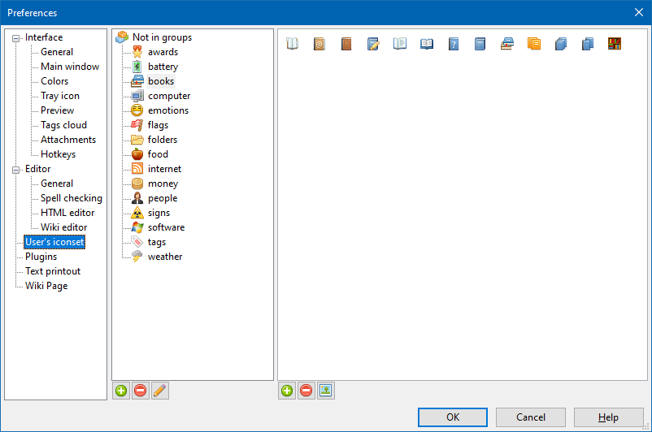

User's icon set

The User's icon set section allows to select custom icon for a page.
Both user's and standard icon libraries are subdivided into groups. Those groups represent special directories located within the icons directory. The latter is in turn a subdirectory of the settings directory (see Settings file location section). All actions with icons and groups thereof can be done via OutWiker's interface.
The left-hand side pane of the section contains the user groups list. Those icons which do not belong to any group (the corresponding files are located in the icons directory itself) are listed under the Not in groups title. Groups can be created, removed and renamed using the buttons below the pane.
The right-hand side pane contains icons for the selected icon groups. Icons can be added and removed from the group, using the corresponding buttons below the pane. The third button allows to set the selected icon as the group icon, shown on the left-hand side pane.
When OutWiker works in portable mode (i.e. the settings file is located in the same folder as the executable file), in this section you can add and remove icons in standard sections. This case is shown in the picture above.